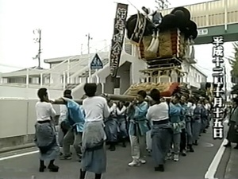

愛媛県四国中央市で開催される川之江秋祭りに登場する伝統的な太鼓台。 重さ約2トン、長さ約12メートルの豪華な装飾が特徴です。
太鼓台を持ち上げる「差し上げ」は最大の見どころ。 夜は提灯で幻想的な雰囲気になります。
各町ごとに異なる太鼓台が運行され、地域ごとの個性が楽しめます。
毎年10月13日から15日まで開催。 詳しくは情報ページへ。
川之江太鼓台 川之江秋祭り 四国中央市 太鼓台 観光 愛媛
このサイトはPS2 Linuxサーバーで運用されています。 Windows95など古い環境でも閲覧可能な軽量設計です。